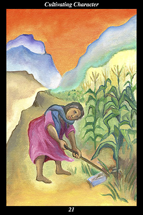

 | IMAGEA female warrior hoes a cornfield amid inhospitable mountains. She has no one to help her, yet her crop is strong and vital.
|
INTERPRETATION
This hexagram depicts the inevitable success of those who develop an undefeatable will to make their own place in the world. The female warrior symbolizes the way of nurturing and encouraging human nature that increases its sensitivity and loving-kindness. That she cultivates the cornfield means that you nurture something that will nurture you, especially by resolutely weeding out any influences that might keep your efforts from bearing fruit. That she lives and works amid inhospitable mountains means that you find a way to adapt to even the most difficult circumstances. Raising a strong crop without help means that you succeed because you do not rely on others to do your hard work for you. Taken together, these symbols mean that you use your circumstances to refine your inner nature.
ACTION
The feminine half of the spirit warrior uses external hardship to cultivate profound inner strength and flexibility. What is essential here is that energy not be wasted on futile actions, thoughts, or feelings. It is especially important that frustration and impatience be uprooted at every turn. When external progress is blocked, it is time to concentrate on inner progress: by focusing on the opportunity that is present rather than those that are absent, you sustain the attitude of appreciation and devotion that leads to a heart and mind filled with virtue. Set aside external goals for a time and concentrate on nourishing your obstacles: treat them with respect, respond to them with concern, grow something productive where it seems nothing can grow. Let difficulties be like fire: feed them with wood so that their flames might burn off all your impurities. By being grateful for your ordeals, you do away with self-pity and self-indulgence. By turning outer oppression into an inner discipline, you create a source of joy in the midst of deprivation. By transforming outer need into inner
benefit, you find the source of spiritual power and wealth. By using obstacles as a whetstone upon which to hone your character, you conscientiously transform your habitual reactions into virtuous ones, achieving thereby greater readiness for the opportunities ahead.
INTENT
You cannot feign sincerity and humility to yourself: the feminine half of the spirit warrior concentrates on fulfilling responsibilities without any unworthy thoughts, feelings, or actions. By allowing hardship to move you closer to spirit, you let go of the tendency to take things personally, thereby quelling both anger and righteous indignation. Increasing the positive feminine half while decreasing the negative masculine half, the spirit warrior cultivates what is nourishing and weeds out the rest—and that which is most nourishing is sincerity, for that is the fertile ground out of which inner worthiness grows. Sincerely seeking to refine your character while responding to difficulties with generous humility, you make yourself so adaptable that you can thrive in any surroundings.
SUMMARY
Repeating the same act over and over, you are making yourself a worthy instrument of life by wearing away all that is petty and self-destructive. Though the outer reward may not be substantial, your diligence polishes your spirit into a priceless jewel. Use routine and repetition to build inner skills that can carry over into any field of endeavor. The momentum is with you.
THE LINE CHANGES
1° You push yourself too hard too soon—this is not the way to build up endurance and confidence. If you continue in this vein, you will actually defeat your own purpose at the very beginning. Back off and wait awhile before starting over again.
2° Your progress is interrupted by a sudden crisis in the life of someone close to you. It is only fitting that you set aside your routine and spend time with all concerned. This is a time for unity and support, not individual effort—clear your mind of your training and focus on those around you.
3° You are too eager to prove yourself—you must not yet challenge those with more experience and skill than yourself. Getting ready for such a contest requires long, arduous, repetitive practice. Many have talent, few transmute it into greatness—true greatness is born of great stubbornness.
4° Training is always much more mental than physical—your nature is so rash and impatient that it must be tempered by calm judgment. Stop looking ahead, stop imagining scenes of success, stop exciting your emotions. Train mentally and you will achieve more than you imagine.
5° The greatest impediment to your training is the desire to prove yourself—this is a reflection of your not believing in your own greatness. Your efforts have carried you far by now, though, and you are able to pull this weed up by its roots. In this way you defeat the greatest opponent you ever face.
6° Self-imposed hardship is like voluntarily setting limits on spending in order to save for something important. Continue cultivating spiritual understanding and virtue. The road of freedom beckons you to rejoin your old companions.